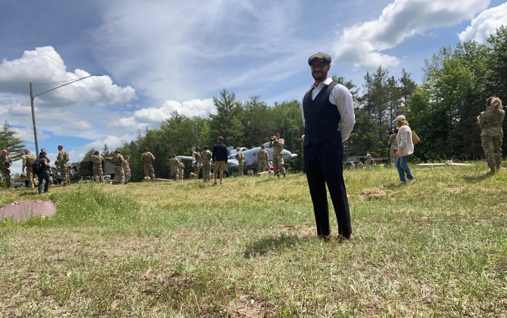

Mechanical engineer. Founding judo coach.
I measure vibration on refinery piping for a living, and I coach the judo club I founded at the University of Michigan.
ScrollIn 2022 I stood on a Michigan highway while the Air Force turned it into a runway.
Three things I've done, in order
Engineering
Keeping heavy industry standing up.
Twice selected for a Department of Defense fellowship — once to work out how to rebuild a runway in eight hours, once on radiation shielding for the Navy. Today I clamp sensors onto live refinery piping and find the lines about to crack.

The club
I started a club from an empty room.
There was no judo at Michigan, so I built it — found the members, imported the mats, and coached. Seven team championships later I'm still on the mat with them, unpaid, every week. Three state titles of my own along the way.

Abroad
A dojo in every country.
Three months each in Germany, Spain and Japan — studying, and finding a mat in all three. Plus one country I've never visited: the club's tatami came from a Chinese manufacturer I negotiated with from a dorm room in Ann Arbor.
Get in touch.
Open to engineering roles, coaching conversations, and anyone trying to start a club of their own.